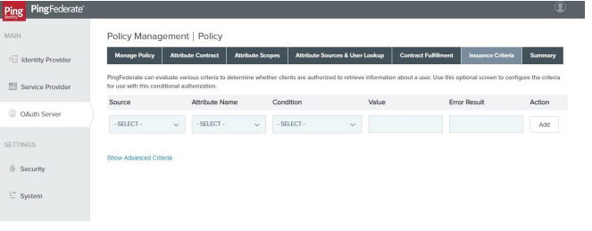
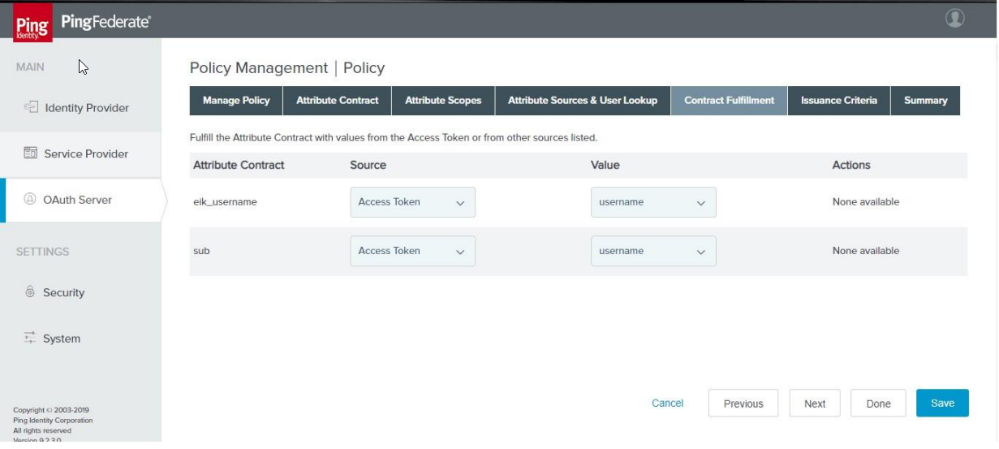
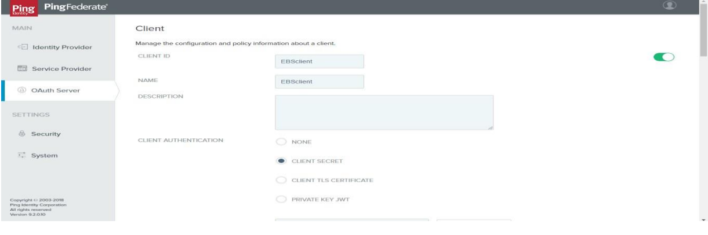

The EBS Integration Kit
Last modified :
PingFederate as an Identity Federation product includes adapters and integration kits that simplify integrations with Identity Stores as well as Applications. The Oracle EBS solution uses these capabilities to enable Single Sign-On. The EBS INTEGRATION KIT (EIK) from LikeMinds Consulting provides a simple deployment path with PingFederate to enable single sign-on (SSO) to Oracle E-Business Suite
How does the EBS Integration Kit work?
The EBS Integration Kit is a light-weight java application which can be deployed in the PingFederate jetty-container which eliminates the need for dedicated server/hardware. The EIK is OpenID Connect Compliant as a resource server and can be configured with PingFederate to receive Authentication and Authorization tokens. The EBS Integration Kit communicates with the Oracle E-Business Suite Database for Session creation and optional user-provisioning if required.
Getting Started
Features as of EIK 2.3.0.2
1. Features
Works seamlessly with PingFederate.
Eliminated the need for additional Oracle components like Oracle Internet Directory or EBS AccessGate.
Provides flexibility of Deployment Methods: The EIK can be installed on the PingFederate server or any other J2EE container.
Supports Just-In-Time provisioning.
2. Benefits
Helps achieve painless integration of modern IAM into your existing architecture.
Enables you to modernize or migrate off legacy IAM without disrupting critical access to Oracle E-Business Suite.
Frees you from vendor lock-in with legacy IAM licensing—you will only require your EBS license.
Requires no provisioning of additional hardware components.
3. System Requirements
Java JDK 1.8 (Recommended Version)
PingFederate 8 and above
EBS IKT package with a valid license file

4. Overview of the flow
1. When a user tries to login, his/her credentials are sent to Pingfederate
2. Pingfederate validates the entered credentials against the configured Authentication Store (i.e.,any LDAP directory)
3. The existence of the authenticated user will be checked against the EBS Database. If the user does exist in the EBS DB, an EBS session would be created, and the user would be allowed access to the requested page in EBS
4. If the authenticated user does not exist in the EBS DB, the user would not be authorized to access the EBS Application
5. If Just-In-Time Provisioning is enabled, authenticated users not present in the EBS DB would be provisioned by the EBS IKT, and EBS Sessions would then be created, thereby giving access to the EBS Application
Configuration of PingFederate
PingFederate is a federation server that provides web single sign-on and API security for the resources in your Organization.
2.0 Configure HTML Form Adapter
1. In PingFederate console go to Identity Provider >> Adapters>>Click New Adapter
2. Provide the Instance Name & ID then Select “Type” as “HTML Form IdP Adapter” and click Next
3. In the Next page, Add the “Password Credentials Validator” and click “Show advanced field” to add “/idplogout” in Logout Path Text Field. Then Click Next.
4. Add any additional attribute in Extended Contracts if required or leave the default values as such
5. Enable “Pseudonym” for username (SP Partners may choose to receive so that they can uniquely identify a user) and click Next
6. Configure the Adapter Contract Mapping or leave it as default and click Next.
7. Review the Summary and Click Done and proceed to Save the adapter
2.1 OAuth Server side Configuration
Configuring Oauth/OIDC flow PingFederate & EBS Integration Kit requires the following sections to be configured:
Authorization server settings
Scope Management
IDP Adapter Mapping
Access Token Management
Access Token Mapping
OpenID Connect Policy Management
Client Creation
2.2 Authorization Server Settings
Authorization Server Settings provide general configuration and policy for the PingFederate Authorization Server
1. Go to OAuth Server >> Under Authorization Server >> Authorization Server Settings
2. Enable the Track Users session for Log out checkbox and leave the remaining as default and click Save
2.3 Scope Management
Scopes can be declared as dynamic, which allows OAuth clients to requestscopes where a component of the scope name is variable. Common scopes are available to OAuth clients by default unless individual clients are configured to restrict common scopes
1. Go to OAuth Server >>Under Authorization Server >> Scope Management
2. The Default scopes for PingFederate are Email, Profile, Openid, Address, Phone
2.4 IdP Adapter Mapping
This configuration allows you tomap attributes based on an IdP adapter configuration into the USER_KEY and USER_NAME attributes (presented to the user for authorization permission) for a persistent grant, as well as the extended attributes
1. Go to OAuth Server >> Authorization Server >> IdP Adapter Mapping and select HTML Form Adapter and click Add Mapping
2. Add any Data Store details if values are pulled from a Data Store. If not, click Next
3. In Contract Fulfillment, Map the USER_NAME & USER_KEY value from either the Adapter or Data Store
4. In the next page, provide any access restriction criteria details if the restriction of user access is required or click Next
5. Review the Summary and then click Done and Save
2.5 Access Token Management
PingFederate uses Access Token Management plugins to issue and validate OAuth access tokens. Each plugin instance can have its own token type, configuration settings, and attribute contract.
1. Go to OAuth Server >> Under Token Mapping >> Access Token Management >> Create New Instance by providing the Instance Name & ID, Type as “JSON Web Token” Click Next.
2. In Instance Configuration Section, under Certificates, Add the Signing & Decryption certificate
3. Under JWS Algorithm Dropdown, choose RSA using SHA-256
4. Under Active Signing Certificate Key ID Dropdown, select the key ID which is added above
5. In the next page, there will be no changes to the Session Validation Settings here. So, leave it defaults.
6. In the below screenshot, In Access Token Attribute Contract, we define the attribute contract for the access tokens issued by this access token management instance. Extend the contract with the ‘eik_username’ & ‘username’ attributes.
7. Click Next
8. Under Access Control, we can restrict the clients who can use this Access Token Management Instance, which we do not use here. So, click Next.
9. Review the Summary and Click Save.
Note: When defining an access token management instance, you can customize various settings, including the token format, lifetime, and attribute contract for this instance.
2.6 Access Token Mapping
Access Token Mapping is used to map the attributes to fulfill the access token attribute contract. This configuration maps from a persistent grant into the access token attribute contract and there should be a default mapping configured for each access token manager.
1. Go to OAuth Server >> Under Token Mapping >> Access Token Mapping.
2.Map the “Context” (IDP Adapter: HTMLFormAdapter) to “Access Token Manager” (JSONWebToken) and then click “Add Mapping”.
3. In “Attribute Source Lookup” Tab (optional), we can add any Attribute Source to fetch the attribute values from any of your desired datastore and on completion click Next.
4. In “Contract Fulfillment” tab, map the Source as Persistent Grant and its value as “USER_KEY” for all contracts as shown in the below screenshot.
5.In the next page, provide any restriction rules to limit the unauthorized access or leave defaults & click Next.
6.Review the Summary and tap Save.
1.Go to OAuth Server >> Token Mapping >> OpenID Connect Policy Management >> Add Policy.
2.Provide a Policy Name & Select the Access Token Manager and leave the remaining as default. Click Next.
3.Under Attribute Contract, Extend the Contract by manually adding ‘eik_username’ and delete the other attributes present. Enable checkboxes for ‘Override Default Delivery,.
4.Click Next.
5.Under Attribute Scopes Section, select openid from the Scope dropdown and in Attributes tick the ‘eik_username’ checkbox.
6.Attributes can be fetched from any of the datastore at the runtime or leave it as to use the values presented in the Token.
7.Under Contract Fulfillment Section, Map the Sub & eik_username attribute from the source - Access Token and value – username.
8.In the next page, provide any restriction rules in case of restricting any unauthorized access.
9. Review Summary and Click Save.
1.In the PingFederate Admin Console, go to OAuth Server >> Clients >> Create New.
2.Create a new client with the following details Client Name : “
” Client ID : “ ” Client Secret : “<(Create secret using Generate Secret option)>”. 3.Type the Redirection URL in the format: https://
: / /handler. 4.Tick the checkbox for Bypass Authorization Approval.
5.For Allowed Grant Types, select Authorization Code and Refresh Token.
6.For Default Access Token Manager choose JSONWebToken.
7.Under OpenID Connectsection, choose the Policy you configured just before.
8.Leave the remaining as default and click Save
1.In PingFederate Click Security >> Security and Certificate Key Management >> SSL Server Certificate >> Create New.
2.Enter the details and create a certificate.
3.Export this certificate now with the option of exporting “Certificate Only” and notwith the private key.
1.Navigate to
/pingfederate directory. 2.Create a new directory named “EBSAuth”. After creation, the directory structure will look like the following:
/pingfederate/EBSAuth. 3.Now, Place the EBS IKT license file “ebsauth.lic” in
/pingfederate /EBSAuth directory. 4.Now navigate to user’s base path using cd ~ and set the environmental variable for EIK_HOME in .bash profile : vi .bash_profile .
5.Set EIK_HOME using this command: export EIK_HOME =
/pingfederate. 6.Save and close the file.
7.Enter the following command to source the bash file: . ./.bash_profile.
8.Verify the new settings using the following commands, echo $EIK_HOME.
1.The JAR file EIKutility.jar needs to be placed in the $EIK_HOME directory created in the previous section.
2.Open terminal/command prompt (as Administrator) and navigate to EIK_HOME directory and execute the following command: java -cp EIKutility.jar com.likeminds.EBSAuth.EIKAdminUtility.
3.1 EIKAuth Config File Generation
3.On running the command, we get a dialog box as follows, Enter all values as per the configuration for all the fields using the template given below:
4.After entering these values in the dialog box, a file named EIKAuth.config gets generated at the EIK_HOME directory.
5.Now, move the EIKAuth.config file to the following location:
/pingfederate/EBSAuth 1.Before proceeding with the DBCX file generation, a custom user should be created in the EBS Application FND_USER table (Username – EIKUSER) with the UMX|APPS_SCHEMA_CONNECT role enabled
2.Place the JAR file EBSdatasource.jar in the $EIK_HOME directory & open the terminal/command prompt and navigate to EIK_HOME directory to execute and generate the EBS Datasource file: ava -cp EBSdatasource.jar com.likeminds.ebsauth.v1.EIKDatasource Y
3.In the nextstep, provide the configuration details of your environment as mentioned in the screenshot:
4.After entering all the above-mentioned values, the EIKUSER will get registered with the following message.
5.As part of the successful execution, a new file EIK.dbcx will be generated in the EIK_HOME directory.
6.Now move the EIK.dbcx file to the following location:
/pingfederate/EBSAuth 1.To deploy the EBSAuth.war file in the PingFederate server, navigate to the “deploy” directory in the PingFederate installation directory.
2.Now copy and place the EBSAuth.war file in the above deploy directory.
3.Restart the PingFederate runtime servers (on All runtime engine nodes if it is a clustered deployment)
1.Login into the EBS Application using the System Admin credentials.
2.Locate and change the following EBS system profiles at Site Level for enabling SSO.
3.Restart the EBS Application Server once the changes had been made and this completes the SSO profile parameter changes in Oracle EBS.
1.Enter the URL for SSO of EBS (For Example:
: ) 2.This URL redirects the user to Pingfederate which throws up an authentication prompt for entering the user credentials.
3.On successful validation of the user credentials, the user will get access to the EBS Homepage.

Note: In this screen, we define the criteria that must be satisfied so that PingFederate processes the request further. In essence, this token authorization feature provides the capability to conditionally approve or reject requests based on individual attributes.
2.7 OpenID Connect Policy Management
Here we define OpenID Connect policies and manage them for obtaining user attributes which act as the claims to be sent in an ID Token and, also in response to requests received at the PingFederate User Info endpoint. Policies that are defined here can be mapped to specific OAuth clients.


Note: In the Contract Fulfillment screen, we map attributes from the access token or other sources to fulfill the attribute contract. Here, the value is provided from the access token.

Note: In this screen, we define the criteria that must be satisfied so that PingFederate processes the request further. In essence, this token authorization feature provides the capability to conditionally approve or reject requests based on individual attributes. We can define multiple criteria, so that in this case, ALL the criteria must be satisfied in order for PingFederate to move a request to the next phase.
2.8 Client Configuration for OAuth Server.
Here we can manage the configurations and policy information related to a client.

2.9 Configure SSL Server certificate
SSL certificates are created as they need to be presented for getting access to the PingFederate administrative console and for all the incoming HTTPS connections at the runtime engine nodes.If you already own an SSL certificate for pingfederate we can skip to the Key Generation part, else we need to proceed with the following steps to configure a self-signed certificate:
Note: As part of the Key Generation process, add the exported certificate to Trusted CAs in PingFederate Admin console.
Deploying EIK in PingFederate
The following steps should be followed for the deployment of EBS Integration Kit in PingFederate server. As a pre-requisite, the EIKAuth.config configuration file & EIK.dbcx EBS DataSource (DBCX) file should be generated before deploying the EIK war package.Pre-Requisite: An environment variable ‘EIK_HOME’ should be set in the PingFederate server before deploying the EBS Integration Kit.
Note: If PingFederate is configured in Cluster, repeatsteps 1 to 8 in all the runtime servers.
3.1 EIKAuth Config File Generation
Note: If PingFederate is configured in Cluster, copy the EIKAuth.config file to all the runtime servers in the same directory location.
3.2 EBS DataSource (DBCX) File Creation
Note: The jar file can also be placed & executed in any server outside of PingFederate, provided, there should be a connectivity to the EBS Database from the execution source.
Enter the connection factory class:
oracle.jdbc.pool.OracleDataSource
Enter the JDBC URL: jdbc:oracle:thin:@
Enter APPS username:
Enter APPS password:
Enter Connection pool name: EBSAuth
Enter initial connection pool size: 10
Enter min. connection pool size: 10
Enter max. initial pool size: 50
Enter timeout check interval(Default is 30 secs): 30
Enter inactive connection timeout (Default is 0 secs): 30
Enter validate connection on borrow (true/false): true
Enter the EIK username: EIKUSER
Enter the EIK user password:
Enter the Context Path:
Note: If PingFederate is configured in Cluster, copy the EIK.DBCX file to all the runtime servers in the same directory location.
3.3 Deploying the log4j2.xml File
Move the provided log4j2.xml file to the following location
Note: If PingFederate is configured in Cluster, copy the log4j2.xml file to all the runtime servers in the same directory location.
3.3 Deploying the cacerts File
Move the java cacerts file to the following location:
Note: If PingFederate is configured in Cluster, copy the cacerts file to all the runtime servers in the same directory location.
3.4 Deploying the security.properties File
Move the provided security.properties file to the following location
Note: If PingFederate is configured in Cluster, copy the security.properties file to all the runtime servers in the same directory location.
3.5 Deploying EBSAuth.war File
Note: If PingFederate is configured in Cluster, copy the EBSAuth.war file to all the runtime servers.
4 System Profile Parameter changes in EBS
The following Oracle EBS System Profile changes will enable SSO by delegating the authentication to PingFederate via EIK.
4.1 System Profile Changes
4.2 SSO Testing for Oracle EBS